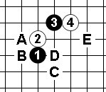
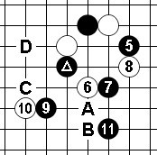
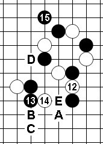
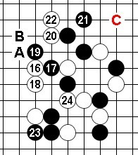
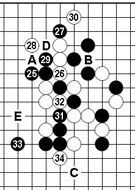
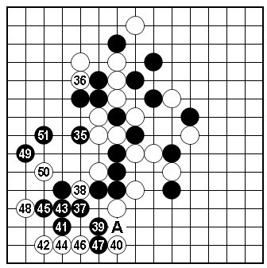

原链接：http://40222106.qzone.qq.com/
第三轮中村茂赢小野孝之较为轻松，第四轮是昨天的重头戏。中村茂VS曹冬，早已不适应熬夜的我一连喝了三杯咖啡提神，还好总算熬到了对局结束。
黑方 中村茂 白方 曹冬 布局 溪月

实战谱1（1~4）看到曹冬的这个4，我和魏强说已经在之前QT用过的变化再用不太好，大赛上比较忌讳一个开局或者变化反复的用。黑5的五个打点分别是A~E。其中D点，之前曹冬在QT与台湾棋手下过，具体参见“第11届世锦赛对局点评（QT）”。观战到这里我感觉曹冬再给中村留D点的可能性不大，那是直接往枪口上撞了。由于转播时看不到黑5的选点，只能耐心等待了。

实战谱2（5~11）看到中村的黑5，很容易就想到后面6、7、8的棋形，“八卦套八卦”大赛中难得一见较有趣味。但仔细想想白8如那样下，也一定是中村下黑7时预计好的吧。所以，观战时考虑白8是否可以考虑其他的选点？比如下A位压缩下黑棋的空间，或许黑9-B继续马步，白下一手也不好应付。实战白8下了后，对于黑9的选点大致有9、C和D这三个点，D点首先排除，空间不如C点大。C点和9比较，实战的9比C点好。实战的9空间位置较适中不论白10如何防，左边和下边都有可以借用之处。实战白10选点难，要临场算清白10的最强防点是不可能的。曹冬的白10可以理解，相比较而言白10如防9的右侧，那么在▲一子的呼应下，黑棋左边的空间太开阔了。这个9看似绵软，其实是绵里藏针。黑11此即绝好点，局后研究黑必胜！实战要算清是不可能的。但有此11后局势已经到关键点，白12如何防？

实战谱3（12~15）白12分断第一感，网上的消息曹冬时间紧张，中村时间较充裕。黑13-A必胜点，中村实战的13下的很快，这个13也是棋形。一般情况下这种关键地方对于棋手来说是应该花费时间仔细计算的时候，13下的这样快推测应该是在曹冬时限下加压手段。白14防的非常好！局部黑没戏。观战到此感觉是不是中村下的太随意了？等到15手出来，刚刚松弛下来的神经被刺了一下，看到中村的15一手感觉和棋已经不可能了。首先第一感白不能跟过去防，那样15一子威力尽显。虽然白14后黑下面无胜，但黑仍有颇多余味可以借用（例如15-B，14只能C此后黑借用多）。16-B反击可行吗？算了下不成立，17-D牵制黑必胜了。16-E或许比16-B好，但17-D后依然攻防复杂。考虑到曹冬的时间紧张，此时反击的可能性不大了，那么只能跟过去防。

实战谱4（16~22）16是尽量兼顾上下之招，17针锋相对。白18~20的交换应该是计算好的吧，在等中村的21时，我的第一感是21-A也是不错的一手，22-B的话23-23感觉白不行。中村的21很快就下了，21局后研究必胜点。22最强防，实战以下官网更新的很快，论坛有人说曹冬只剩几分钟了，中村还有一小时？中村走的这么快是不给对手时刻的时间，但也有不少胜机都错过。中村毕竟是中村，快棋对选点和局势的判断依然非常厉害。实战的23黑胜，23-C也能胜。24防，好感觉。但右上C位的胜点依然成立。25能发现这个胜点吗？

实战谱5（25~34）看到中村的25稍感宽心，26强防！26如A，27-B追胜。中村的27也是临场要点顺势而为，28、30似乎是为了消除黑右上的胜而采取的手段？中村的33再次逸机，33-34后C追胜成立。如实战的30-防D，则黑下面的追胜不成立。但在实战时限非常紧张的情况下，要看清这些变化是不现实的。中村的33常见棋形，曹冬的34防后中村的35没有预想的快，当时我感觉中村是不是在算如何胜？如果这边再被曹冬防住那么和棋就有可能了。我个人35第一感的选点是E点，验证了下的确能胜。中村会错过最后一次机会吗？

实战谱6（35~51）实战的35以下追胜，中村的胜法较上图35-E简明（35-E白防点多）。这盘棋的9、11、15、21、23手棋，充分体现了中村茂敏锐的大局观和细腻的胜负感觉。曹冬在时限紧张的情况下防守顽强，这盘棋不失为本轮的一盘好棋。